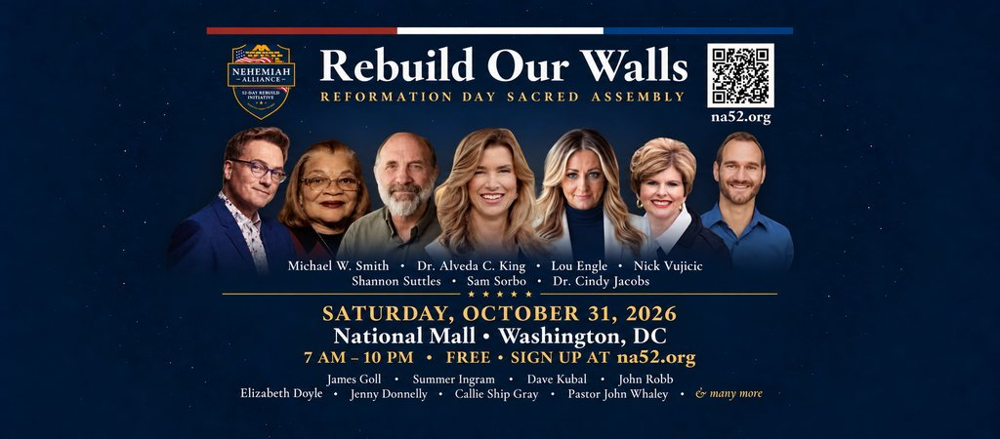

Dear Firebrand Family and Friends, Thank you for signing up to stay connected with us. Some of you have walked with our family and ministry for years, and we are deeply grateful for your love, prayers, and faithful encouragement. It means so much to share this next chapter with you. Jason and I are preparing to go to Washington, D.C., where I have been invited to pray and speak a message on the National Mall with the Nehemiah Alliance. On October 31, we will gather for the Reformation Day Sacred Assembly, joining believers across America and around the world in prayer, repentance, and a call to return to God. The significance of this invitation is difficult to put into words. I will be joining powerful men and women of God, including Dr. Cindy Jacobs, Lou Engle, James Goll, Nick Vujicic, Michael W. Smith, Dr. Alveda C. King, Jenny Donnelly, and Sam Sorbo, among many others. These are leaders I deeply honor — people whose service, prayer, worship, evangelism, ministry, and leadership have strengthened the Body of Christ and contributed to the well-being of our nation. To be entrusted with a place alongside them in this sacred assignment is profoundly humbling.  Saturday, October 31 · National Mall, Washington, DC |
Speaker of the House Mike Johnson is also involved, along with governors, senators, and other civil leaders who have aligned themselves with state proclamations calling their states to prayer and spiritual renewal. California, Tennessee, and other states are participating in this growing movement as civil leaders publicly acknowledge the need to seek God on behalf of their people. We believe that when civil government aligns with the spiritual government of heaven, it creates a place of agreement and brings spiritual authority into these areas as we pray. These proclamations and acts of alignment represent open gates of access for the Spirit of God to enter and transform our governments, influence our leaders, and bring righteousness, wisdom, justice, and healing to our nation. We draw this understanding from scripture where Jesus talks about the power of binding and loosing. What our leaders, whether spiritual or civil, permit on the earth, that is what is permitted in heaven. Whatever they do not permit will not be permitted. This is a profound truth taught by our Lord and Savior, and we clearly see the fruit of these truths manifesting in our culture today. The reach of this movement extends far beyond Washington. The Nehemiah Alliance is calling believers from all 50 states and more than 100 nations to unite in prayer, fasting, and repentance. Pastors and ministry leaders around the world are joining this movement and bringing their churches on board, mobilizing their congregations to pray for America and seek spiritual renewal in their own nations. Through the Discipleship Partner Church initiative, churches can host the October 31 livestream, gather their congregations for prayer, and participate in the 52-day journey of seeking God together. Churches are also being equipped with prayer resources and tools to share the vision, reach their communities, and disciple those who respond to Christ. We are expecting millions of people around the world to join us in prayer for America through the global broadcast, participating churches, and believers gathering in their homes and communities. To stand in Washington while the Body of Christ joins us from across the nations is an extraordinary responsibility and privilege. Psalm 133 reminds us how good and pleasant it is when God’s people dwell together in unity, and declares that there the Lord commands His blessing. Jesus also prayed that His followers would be one so that the world would believe the Father had sent Him (John 17:21). That unity is at the heart of this assignment: churches, ministries, leaders, civil leaders, and families coming together before God with a shared cry for repentance, healing, and restoration. We believe this united movement will help ignite the Great Awakening we are believing this nation will see. We are praying for people to encounter Jesus, for churches to be renewed, for families to be restored, and for a generation to return wholeheartedly to God. Many of you will remember that God has been speaking to us about this calling for years. I have carried a deep love for America since I was a young girl. After years of faithfully serving wherever He placed us, we are watching something He spoke about become a reality. We had no personal relationships within the Alliance that could have secured this invitation. We recognize the hand of God in it. To now serve as a National Leader with the Nehemiah Alliance and be catapulted into this assignment is a sheer miracle — an opening only He could have made, and the fulfillment of a longstanding prophetic word over our lives. Our family’s testimony makes this calling deeply personal. Jason and I know what it means to walk through profound brokenness and contend for restoration. We have experienced separation from family, painful battles, long seasons of waiting, and the faithfulness of a God who does the impossible. Today, our restored family serves together. Our daughter, Annie Whaley, serves alongside us as Chief Legal & Operations Officer. The daughter with whom I was once separated through adoption is now helping us build the work God has entrusted to our family. Our son, Mark, is also part of the story God has written for our family. He is serving alongside us in our ministry training, in his watchman calling and in a cybersecurity role. I cannot describe how thankful I am for the power of God’s redeeming love in my family, turning us around from such brokenness into triumphant victory. That kind of powerful restoration is part of the hope we carry for America. We have seen God rebuild what seemed beyond repair, and we believe He can do it in families throughout this nation. Would You Partner With Us? With all that said, we are calling on those who love God and feel called to partner with what we are doing. Right now, we are seeking to raise $5,000 to help cover travel for us and our team, lodging, meals, and ministry expenses for our Washington, D.C., assignment, while also meeting immediate needs connected to ongoing ministry responsibilities. If you are able, would you prayerfully consider giving a one-time gift or partnering with us? A gift of $5, $10, $25, $50, $100, or any amount the Lord places on your heart will help us take this step in obedience. If you would like to help us reach the full goal, you can give through: Ways to Give Zelle: Firebrand Revivalists™
Please list your email in the memo line. |
| Firebrand Revivalists™ is a Washington nonprofit corporation organized and operated as a church within the meaning of Section 501(c)(3) of the Internal Revenue Code, and is exempt from the notice and application requirement under Section 508(c)(1)(A). Gifts are tax-deductible to the extent allowed by law. Receipts are provided for every gift of $250 or more. |
Your gift is more than financial support — it is a tangible way to stand with us in prayer and partnership as we respond to God’s call. Together, we can help carry this message of repentance, restoration, and hope to our nation. Thank you for helping make this assignment possible. Thank you for walking with us, praying for our family, and standing with us in this assignment. Please pray that we will serve faithfully, speak clearly, and carry the heart of God as we join this united call for America’s restoration. Join Us We invite you to join us in Washington on October 31, or to participate through the worldwide livestream. Please also share this invitation with your pastor and encourage your church to become a Discipleship Partner Church. Through these emails, we will continue sharing ministry updates, timely words of encouragement, and prayers for you and your family. We are praying for everyone connected to the ministry mantle God has entrusted to us, and we welcome your prayer requests. We have a prayer request form you can fill out at firebrandrevivalists.com. There are many more blueprints to share, and we know this is only the beginning. Thank you for walking with us as we answer this call to see families restored and America return to God — for His glory. You can view some of our work at the links at the bottom of this email. With love and gratitude, Shannon & Jason Suttles Firebrand Revivalists™ |